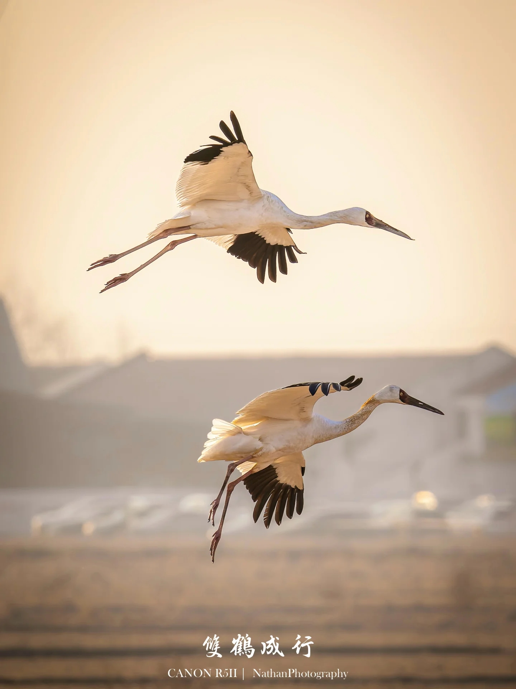
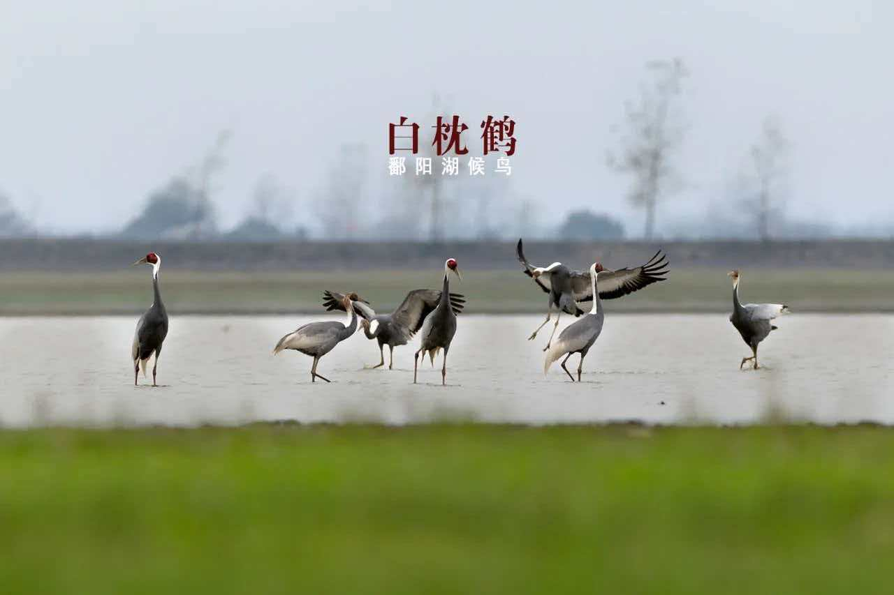
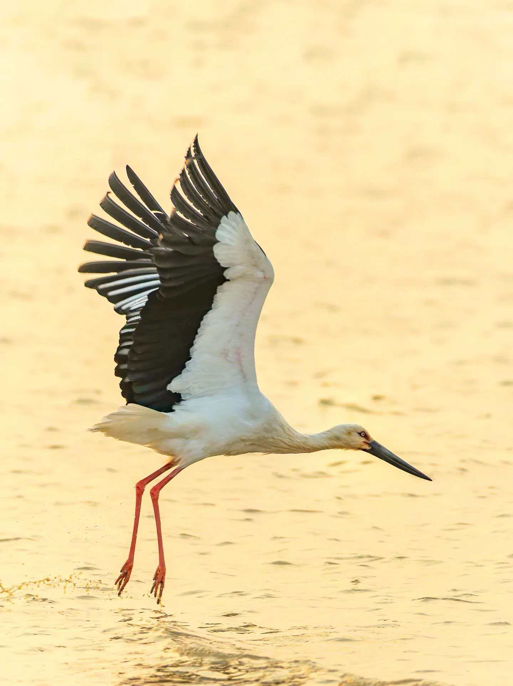
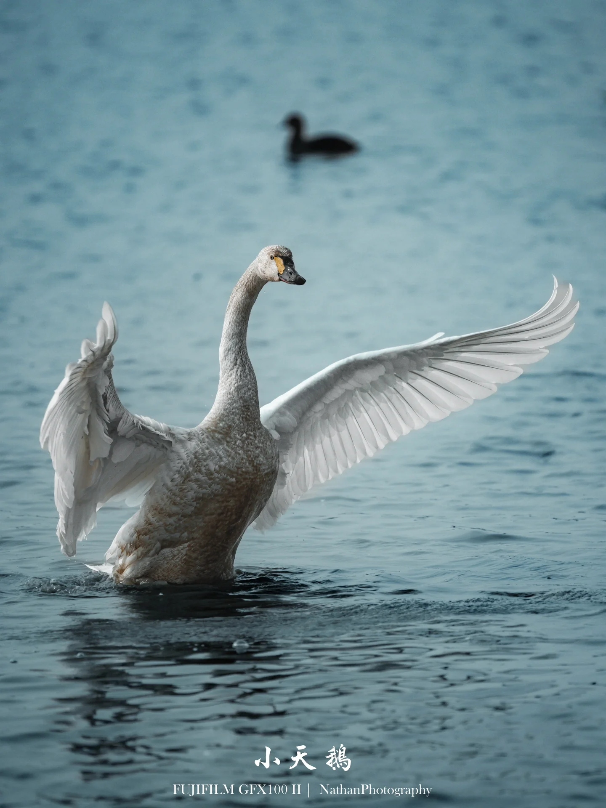
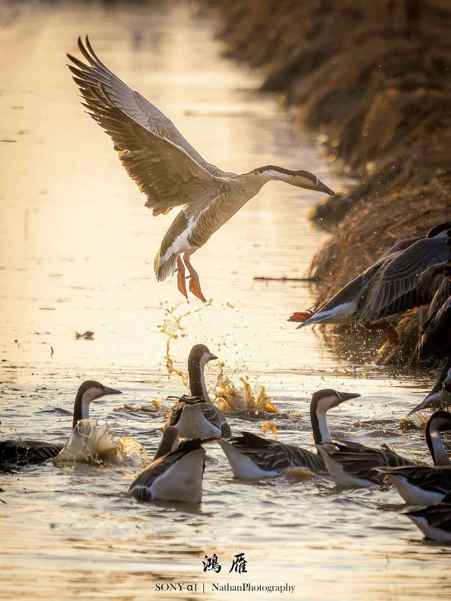
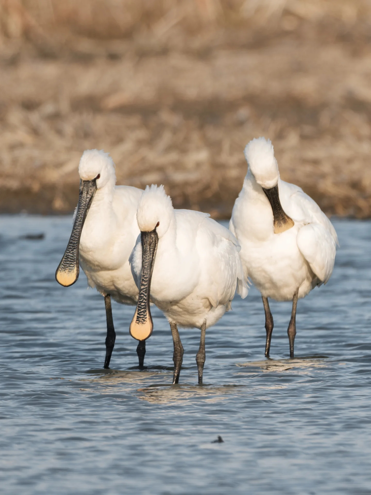

认识鄱阳湖的珍稀候鸟家族

体长约135厘米，通体洁白。全球98%以上在鄱阳湖越冬。以水生植物根茎为食，栖息于浅水区和草洲。每年10月抵达，次年3月北返。

体长约130厘米，颈侧有白色条纹。常与白鹤混群活动，数量稀少。性格机警，多在清晨和傍晚觅食。

体长约120厘米，体羽白色，飞羽黑色。嘴长而粗壮，以鱼类、蛙类为食。常在浅水中缓慢行走觅食，姿态优雅。

体长约120厘米，全身洁白，嘴基有黄色斑块。常成群活动，在开阔水面游弋。以水生植物根茎为食，叫声清脆嘹亮。

家鹅的祖先，体长约88厘米。额部有白色细纹，嘴黑色。常排成"人"字形或"一"字形飞行，是忠诚与团结的象征。

体长约85厘米，嘴形独特，前端扁平如琵琶。常成群在浅水中左右摆动嘴巴觅食小鱼虾。全身洁白，飞行时颈前伸。